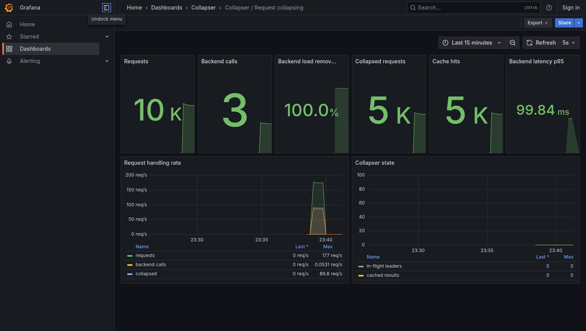

A gRPC sidecar that collapses duplicate in-flight requests into one backend call.
I built this to learn how request deduplication, Docker and Kubernetes behave together not just how they are supposed to work on a diagram. This page records the design, the local infrastructure, the measurements and the mistakes.
The problem is a small version of the thundering-herd problem: a burst of identical reads can overwhelm a backend even though one answer would satisfy every caller. Collapser is the deduplication layer between those callers and the backend.
In Kubernetes, Collapser is a real application sidecar: it runs in the
same pod as the backend, receives gRPC requests on port
50052, and calls the backend on
localhost:50051. The application path needs no external
service; Prometheus and Grafana are optional local observability
containers deployed alongside it.
When several callers ask a service the same question at the same time, the service answers it once per caller. The proxy sits in front and gives them all the same answer from a single backend call.
The first request for a given key calls the backend. Anything arriving while that call is in flight waits on the same result instead of starting its own. A short result cache (100 ms) covers the gap just after a call finishes.
A normal gRPC service does not know that two independently arriving requests are the same request. That is the gap this sidecar fills.
This is a reproducible local lab, not a cloud deployment. kind creates Kubernetes nodes as Docker containers, so Docker is both the image builder and the machine that runs the cluster. No image registry is needed.
| Step | What happens | Why it matters |
|---|---|---|
| 1. Build | Multi-stage Dockerfile produces the Collapser sidecar and backend images. | Same artifacts locally and in Kubernetes. |
| 2. Create cluster | kind creates a local Kubernetes cluster inside Docker. | Real pods, Services and container networking on one machine. |
| 3. Load + deploy |
kind load docker-image copies local images into
the nodes, then manifests create the workloads.
|
Fast iteration without publishing images. |
| 4. Measure | The included Go client sends identical requests; the backend counter verifies the result. | The collapse ratio is observed at the destination. |
# prerequisites: Docker, kind and kubectl on PATH make cluster #
local Kubernetes cluster running in Docker make deploy # docker
build → kind load → app + Prometheus + Grafana make demo # burst
traffic and print backend calls make grafana # open the provisioned
dashboard on localhost:3000 make cluster-down # remove the local
cluster
In the Dockerfile, each target starts from scratch and
runs as a non-root user. In the Kubernetes manifests, the images use
imagePullPolicy: Never because kind already has the
locally loaded image.
Three separate paths, benchmarked separately. Mixing them in one benchmark is the mistake I made first.
| Path | Time | Bytes | Allocs |
|---|---|---|---|
| Cache hit | 45.7 ns | 0 B | 0 |
| Joining an in-flight call | backend-bound | 54 B | 0 |
| Leading a call | 1,594 ns | 552 B | 10 |
| No Collapser (baseline) | 0.33 ns | 0 B | 0 |
Go 1.25.5, 11th Gen Core i7-1165G7, 8 threads. For the join path the number of allocations is what matters, not time. A waiter's wall clock is just however long the backend takes. Zero allocations there is the result of waiters sharing one channel instead of each registering their own.
| Test | Requests | Backend calls | Errors |
|---|---|---|---|
| 10,000 concurrent, one key | 10,000 | 2 | 0 |
| 60 s sustained, 100 workers | 391,400 | 392 | 0 |
Race detector on. Goroutine count and heap were flat across 100,000 requests.
The local demo sends a burst through the Collapser Service into the sidecar container. It then prints the backend's own call count and the collapse ratio. That keeps the measurement honest: the sidecar cannot claim more load reduction than the backend actually sees.
make cluster && make deploy && make demo
The proxy exposes Prometheus metrics on port 2112. A
small local Prometheus deployment scrapes that endpoint every five
seconds, and the provisioned Grafana dashboard visualises the result.
No dashboard clicking or datasource setup is required:
make deploy creates both services, and
make grafana opens the dashboard on
localhost:3000.

These were all in the version I had already written up before I went back and measured properly.
COLLAPSER_KEY_HEADERS so
those requests stay separate. This one bothers me most, because
the code looked correct.
proto. That is what makes the proxy work without
generated stubs, but it means the package can't be imported into a
process that needs normal protobuf marshalling.